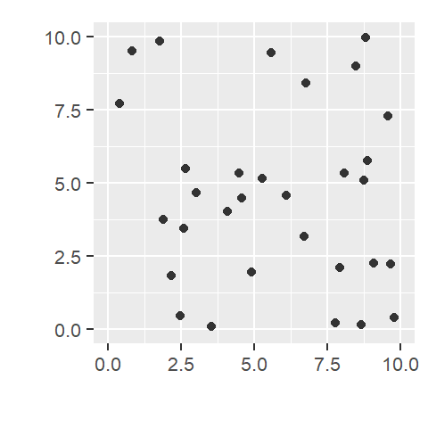
14 First-Order Point Pattern Analysis
14.1 Introduction
In spatial point pattern analysis, first-order effects refer to variations in the intensity of points across a study area due to external factors. These effects describe how the likelihood of observing a point changes from one location to another, independent of the presence or absence of other points. For example, oak trees may be more densely distributed in areas with favorable soil conditions, or retail stores may cluster in regions with higher population density. In both cases, the spatial variation is driven by underlying environmental or socioeconomic covariates rather than interactions between the points themselves.
This concept is analogous to the spatial trend models introduced in Chapter 12 for continuous fields. There, we modeled how attribute values varied as a function of location. Here, we focus on how the intensity of a point process varies across space. In both cases, the objective is to characterize first-order effects before investigating potential second-order effects.
This chapter focuses on techniques for detecting and modeling these first-order effects. We begin with simple descriptive tools such as global and local density measures, then move to more refined methods such as kernel density estimation and covariate-adjusted intensity modeling. Finally, we introduce statistical models, such as the Poisson point process model, that allow us to formally test hypotheses about how external variables influence point intensity. By characterizing and accounting for first-order effects, we lay the groundwork for the second-order analyses presented in the next chapter where the focus shifts from spatial variation in intensity to interactions among points.
14.2 Understanding Intensity and Density in Point Patterns
In point pattern analysis, the terms intensity and density are closely related but conceptually distinct. Understanding the difference is important when interpreting spatial patterns and building models.
Density refers to the observed number of points per unit area in a dataset. It’s a descriptive statistic: what we actually count from the data. For example, if there are 31 trees in a 100 square meter plot, the density is 0.31 trees per square meter.
Intensity, on the other hand, refers to the underlying rate or likelihood that a point occurs at a location. It’s a property of the process that generated the pattern, not simply the observed pattern itself. Intensity is often denoted by the symbol \(\lambda\) and can vary across space. When we estimate intensity from observed data, we use \(\widehat{\lambda}\) to indicate that it’s an approximation.
Think of it this way: density is what we observe, intensity is what we infer. If the intensity is constant across the study area, the process is said to be homogeneous. If intensity varies across space, the process is inhomogeneous.
Spatial variation in intensity is the point-pattern analogue of a spatial trend in continuous field data. In both cases, the goal is to characterize first-order effects before examining possible second-order interactions. We therefore need tools that can model how intensity changes with location or covariates.
14.3 Global density
A basic estimate of a point pattern’s intensity, \(\widehat{\lambda}\), is its global density: the average number of observed points per unit area across the entire study region. While density is an observed quantity and intensity is a property of the underlying process, the global density provides a simple estimate of intensity under the assumption that the process is homogeneous. It is computed as the ratio of the total number of observed points, \(n\), to the surface area of the study region, \(a\):
\(\begin{equation} \widehat{\lambda} = \frac{n}{a} \label{eq:global-density} \end{equation}\)
This estimate assumes that the underlying point process is homogeneous, meaning the intensity is constant throughout the region.
While useful as a summary statistic, global density provides only a single value for the entire study area and can mask important spatial variation. To investigate whether intensity changes across space, we need local density measures.
14.4 Local density
A point pattern’s density can vary across space, and measuring it at different locations allows us to assess whether the underlying process’s local intensity, \(\widehat{\lambda}_i\), is spatially uniform or not. Spatial variation in intensity is a hallmark of a first-order effect, where external factors influence the likelihood of observing points in some parts of the study area more than others. Estimating local density therefore provides a way to explore how intensity changes across space and whether the assumption of a homogeneous process is reasonable.
Identifying non-uniform intensity is important because many second-order analyses (covered in the next chapter) assume stationarity: the assumption that the underlying process generating the points has a constant intensity across the study area.
As with spatial trends in continuous fields, variation in intensity can create the appearance of clustering even when no interaction exists among points.
Local density methods do not directly explain why intensity varies, but they can help identify areas where the underlying process may be stronger or weaker, thereby guiding subsequent modeling efforts.
Several techniques are available for estimating local density. In this chapter, we focus on two widely used methods: quadrat density, which divides the study area into discrete subregions, and kernel density, which uses a moving window to produce a smooth surface of estimated intensity.
14.4.1 Quadrat density
One simple way to estimate local density is to divide the study area into smaller regions and compute a separate density value for each region. Quadrat density analysis involves dividing the study area into sub-regions called quadrats. For each quadrat, the local density is computed by dividing the number of points within the quadrat by its area. This provides a spatially localized estimate of point intensity. In effect, quadrat analysis replaces the single global density value introduced earlier with a collection of local density estimates distributed across the study area.
This method assumes that the intensity of the point process is roughly constant within each quadrat, which may not hold if quadrats are too large or poorly aligned with underlying spatial variation.
Quadrats can take various shapes such as hexagons and triangles. The following example divides the study area into four equally sized square quadrats and computes a local density value for each.
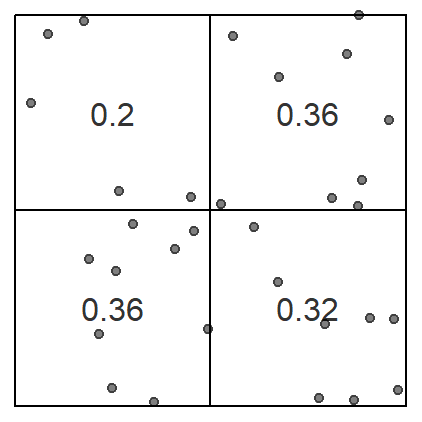
The choice of quadrat size, number, and shape can influence the measure of local density and must be chosen with care. If very small quadrat sizes are used, you risk having many empty quadrats which may prove uninformative. If very large quadrat sizes are used, you risk missing subtle changes in spatial density distributions such as an east-west gradient in density values.
Instead of dividing the study area into uniform shapes, quadrats can also be defined based on an underlying covariate: a spatial variable believed to influence point intensity (e.g., elevation, land cover, or population density). For example, if it’s believed that the underlying point pattern process is driven by elevation, quadrats can be defined by sub-regions such as different ranges of elevation values (labeled 1 through 4 on the right-hand plot in the following example). This can result in quadrats with non-uniform shape and area. This idea moves us from describing where points occur to exploring whether intensity may be related to an underlying environmental variable.
Converting a continuous field into discretized areas is sometimes referred to as tessellation. The end product is a tessellated surface.
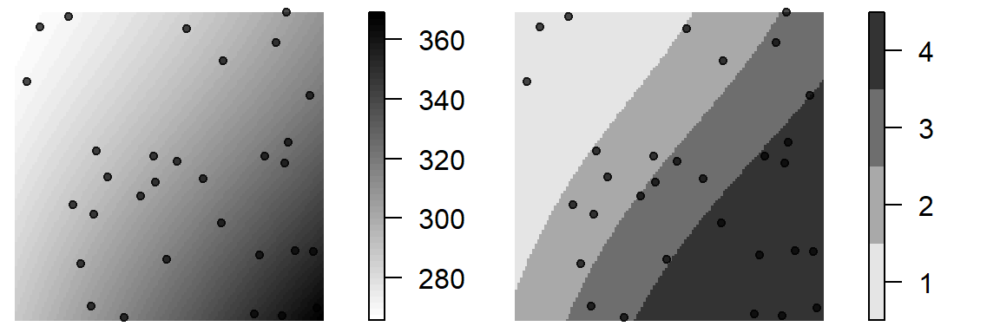
If the local intensity changes across the tessellated covariate, then there is evidence of a dependence between the process that generated the point pattern and the covariate. In our example, sub-regions 1 through 4 have surface areas of 23.54, 25.2, 25.21, 26.06 map units respectively. To compute these regions’ point densities, we simply divide the number of points by the respective area values. The resulting point counts and density estimates are shown below.
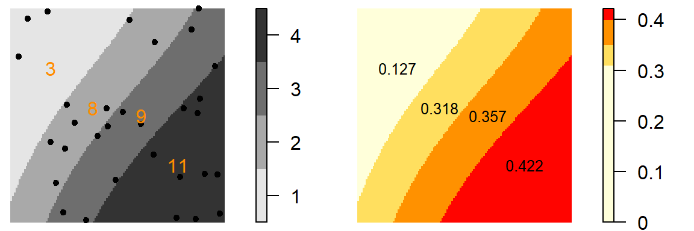
We can plot the relationship between point density and elevation region to help assess whether intensity varies systematically with elevation.
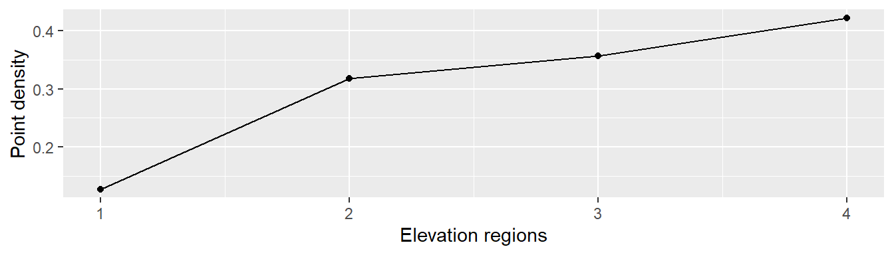
It’s important to note that how one chooses to tessellate a surface can have an influence on the resulting density distribution. For example, dividing the elevation into seven sub-regions produces the following density values.
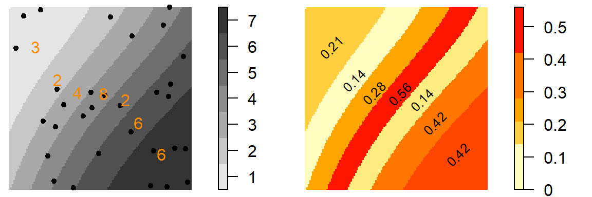
While the higher density observed in the western portion of the study area remains evident, the density pattern elsewhere depends on how the elevation surface is partitioned.
The quadrat analysis approach has advantages: it is straightforward to compute and easy to interpret. However, it is susceptible to the modifiable areal unit problem (MAUP) as illustrated by the previous two examples.
Quadrat density is most useful when the study area can be meaningfully divided into regions of interest, or when a covariate provides a natural way to segment space. However, quadrat methods can struggle to capture gradual or continuous changes in intensity across space. This limitation motivates the kernel density methods introduced next.
14.4.2 Kernel density
While quadrat density provides localized estimates of intensity, it imposes sharp boundaries between neighboring regions. In reality, intensity often changes continuously across space. Kernel density estimation (KDE) addresses this limitation by replacing fixed quadrats with a moving window that produces a smooth estimate of spatial intensity.
Like quadrat density, KDE computes localized density values, but it does so using a moving window that overlaps across space, producing a continuous surface of estimated intensity. This moving window is defined by a kernel. A kernel is a mathematical function that defines how much influence each point has on the estimated intensity at a given location.
The kernel density method produces a grid of intensity estimates in which each cell’s value reflects the weighted contribution of nearby points within the kernel window centered on that cell. As the window moves across the study area, a separate density estimate is computed at each location.
The simplest kernel function is a uniform kernel where each point within the kernel window is assigned equal weight.
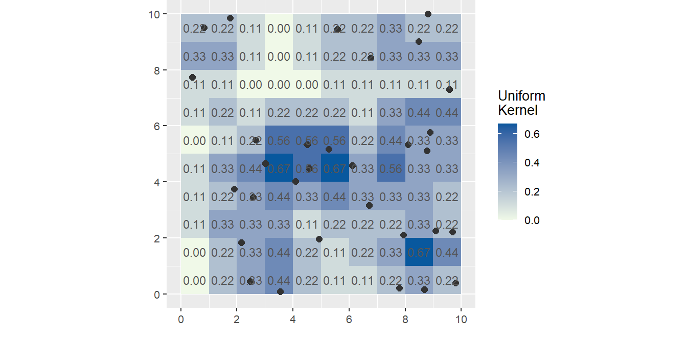
Not all kernel functions assign equal weight to points within the kernel window. More commonly, points closer to the center of the kernel receive greater weight than points farther away. Many kernel functions follow a Gaussian or quartic distribution, causing the influence of a point to decrease with distance from the kernel center. These weighting schemes tend to produce smoother estimates of spatial intensity.
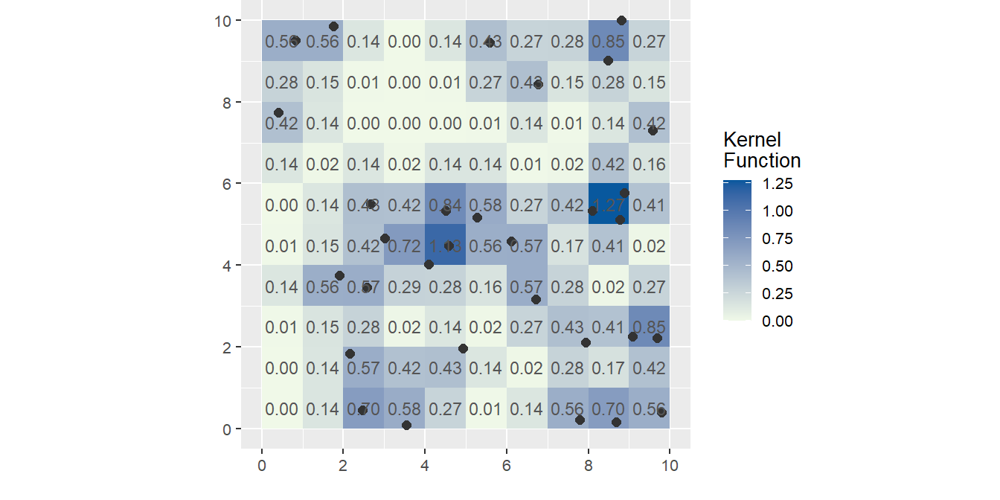
While kernel density estimation produces a smooth map of estimated point intensity, it remains primarily a descriptive tool. A common exploratory step is to compare the resulting intensity surface to an underlying covariate such as elevation, land cover, or population density. This can help identify potential spatial relationships, for instance, whether areas of high point intensity tend to correspond to areas with high covariate values. Such comparisons can provide useful clues about the processes shaping the point pattern, but they do not directly model the relationship between intensity and the covariate. To do that, we need methods that explicitly estimate intensity as a function of one or more covariates.
14.4.3 Non-parametric Intensity Modeling with Covariates
In an earlier section, we learned that we could use a covariate, such as elevation, to define the sub-regions (quadrats) within which densities were computed.
Here, instead of dividing the study region into discrete sub-regions, we estimate an intensity function, denoted \(\rho(z)\), that describes how point intensity varies as a function of a covariate \(z\) (e.g., elevation). This function is then used to model the spatial intensity \(\widehat{\lambda}(x)\) at each location \(x\) in the study area.
In this framework, \(\rho(z)\) describes the relationship between intensity and the covariate, whereas \(\widehat{\lambda}(x)\) represents the resulting intensity surface across the study region after applying that relationship to the spatial distribution of the covariate.
Several approaches can be used to estimate \(\rho(z)\) including the ratio, re-weight and transform methods. We will not examine the differences among these methods here, but it is worth noting that there is more than one way to estimate the relationship between intensity and a covariate.
In the following example, elevation is used as the covariate and \(\rho(z)\) is estimated using the ratio method. This method compares the observed density of points at different covariate values to the density of the covariate itself, producing an estimate of relative intensity. The resulting \(\rho(z)\) function is shown in the center panel, while the right panel maps the modeled spatial intensity \(\widehat{\lambda}(x)\) derived from the elevation surface.
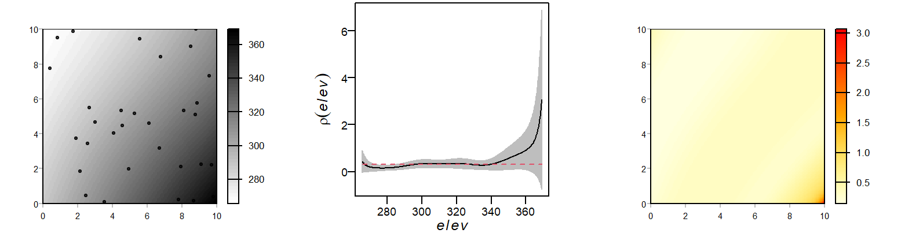
One way to assess how well the covariate explains the observed point pattern is to compare the modeled intensity surface to the observed intensity surface derived from kernel density estimation. The following scatter plot compares the modeled intensity values to the observed kernel density estimates at corresponding locations.
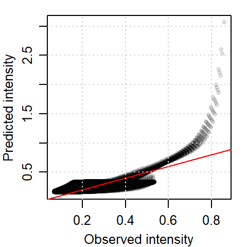
A red one-to-one diagonal line is added to the plot. The scatter plot compares the modeled intensity (based on elevation) to the observed kernel density estimates. While the overall relationship is positive, the points deviate from the one-to-one line, indicating that the elevation-based model does not perfectly reproduce the observed intensity surface.
Some of this discrepancy may reflect increased uncertainty at higher elevation values, where fewer observations are available to estimate the relationship between intensity and elevation. This uncertainty is evident in the \(\rho(z)\) vs. elevation plot (Figure 14.9) where the 95% confidence envelope widens at higher elevations. Such widening is common in spatial modeling when covariate values are unevenly represented across the study area.
Modeling intensity as a function of a covariate allows us to explore first-order effects more rigorously. It helps determine whether external factors, such as elevation or population density, can explain the spatial distribution of points.
While this approach still relies on kernel-based methods, it differs conceptually from the kernel density estimation introduced in the previous section. Standard kernel density estimation uses only the observed point locations to estimate intensity and can then be compared to a covariate map to identify potential associations. Here, however, the covariate is incorporated directly into the estimation procedure. Instead of asking whether a density surface resembles a covariate, we explicitly estimate how intensity changes as a function of that covariate.
This approach yields a non-parametric estimate of the relationship between intensity and a covariate, providing insight into first-order effects. The function \(\rho(z)\) captures this relationship without assuming a specific parametric form. In the next section, we explore a complementary approach, Poisson point process modeling, which specifies intensity as a parametric log-linear function of one or more covariates.
14.4.4 Parametric Intensity Modeling with Covariates
Up to this point, we have focused on non-parametric techniques for describing how point intensity varies across space and with underlying covariates. While these methods can reveal important first-order patterns, they do not provide an explicit statistical model relating intensity to a covariate. In many applications, it is useful to specify this relationship directly using a formal statistical framework.
Note: A useful way to think about the difference between parametric and non-parametric approaches is that parametric models summarize a relationship with a few numbers, whereas non-parametric models summarize a relationship with a fitted curve whose shape is determined largely by the data. In the previous section, the \(\rho(z)\) function was estimated without assuming a specific mathematical form. In this section, we assume a specific log-linear form whose shape is determined by a small set of parameters.
One widely used approach is the Poisson point process model (PPM) which expresses point intensity as a function of one or more covariates. A simple PPM takes the form:
\[ \begin{equation} \lambda(i) = e^{\alpha + \beta Z(i)} \label{eq:density-covariate} \end{equation} \]
This equation defines how the expected point intensity varies as a function of the covariate \(Z(i)\). The term \(\lambda(i)\) represents the modeled intensity at location \(i\), while \(e^{\alpha}\) is the baseline intensity when the covariate is zero. The term \(e^{\beta}\) represents the multiplicative change in intensity associated with a one-unit increase in the covariate \(Z(i)\). The parameters \(\alpha\) and \(\beta\) are estimated from the data using maximum likelihood, a procedure that identifies the parameter values that best explain the observed point pattern given the covariate surface. Note that the units of intensity are determined by the coordinate reference system (for example, stores per square kilometer), and the interpretation of \(\beta\) depends on the scale and units of the covariate.
The equation is a form of a log-linear model commonly used in spatial statistics to model intensity. While it resembles logistic regression in structure, the quantity being modeled is different. In a Poisson point process model, the response variable is intensity, whereas logistic regression models probability. Taking the natural logarithm of both sides yields the more familiar linear form:
\[ \log{\lambda}(i) = \alpha + \beta Z(i) \] where \(\alpha + \beta Z(i)\) is the linear predictor.
Note: The log-linear form of a Poisson point process model resembles that of logistic regression, a model many students may have encountered in an introductory statistics course. However, the two approaches serve different purposes. Logistic regression models the probability of occurrence, while a Poisson point process model models the intensity of occurrence. Although mathematical connections exist between these frameworks, they should not be interpreted as equivalent models. One such connection is given by the transformation \(\lambda = P / (1 - P)\), which leads to: \[ P(i) = \frac{e^{\alpha + \beta Z(i)}}{1 + e^{\alpha + \beta Z(i)}} \]
This relationship is useful when interpreting intensity in terms of probability, particularly in presence/absence modeling.
The Poisson point process model assumes that events occur independently and that intensity varies smoothly as a function of the covariate. It does not account for interactions among points and is therefore designed to model first-order effects rather than the second-order interactions examined in the next chapter.
The advantage of this framework is that it provides both parameter estimates and formal statistical tests for assessing whether a covariate contributes to explaining the observed point pattern.
To illustrate, consider the distribution of Starbucks cafés in Massachusetts. The point pattern is clearly non-uniform, suggesting that café locations may be influenced by underlying socioeconomic factors. One plausible covariate is population density, since areas with larger populations may support a greater number of retail establishments. The following figure compares Starbucks locations to the population density distribution.
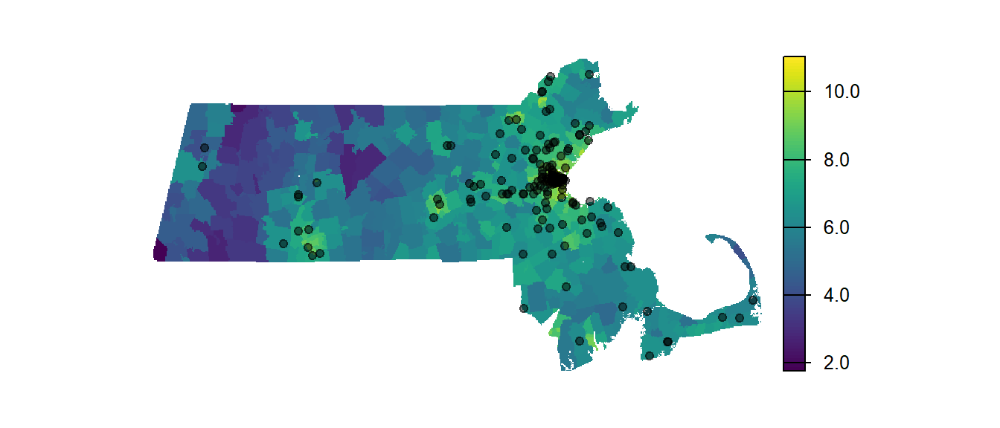
We can fit a Poisson point process model to these data where the modeled intensity takes the form:
\[ \begin{equation} Starbucks\ intensity(i) = e^{\alpha + \beta\ population(i)} \label{eq:walmart-model} \end{equation} \]
The parameters \(\alpha\) and \(\beta\) are typically estimated using a procedure called maximum likelihood. Its implementation is not covered here but is widelydiscussed in introductory statistics textbooks. The index \((i)\) reminds us that both the modeled intensity and the population density can vary as a function of location.
In our example, the estimated value of \(\alpha\) is -5.151. This indicates that when population density is zero, the baseline intensity of the point process is e-5.151 = 0.00579 cafes per square kilometer (the units are determined by the coordinate reference system), a value close to zero as one might expect.
The estimated value of \(\beta\) is 0.00017. This indicates that for every one-unit increase in the population density raster, the intensity of the point process is multiplied by e0.00017 = 1.00017.
Thus, higher population density is associated with a higher expected intensity of Starbucks locations.
The following figure shows the fitted intensity function as a function of population density, along with a 95% confidence envelope. This plot helps visualize the estimated relationship between population density and store intensity while highlighting uncertainty in the fitted model.
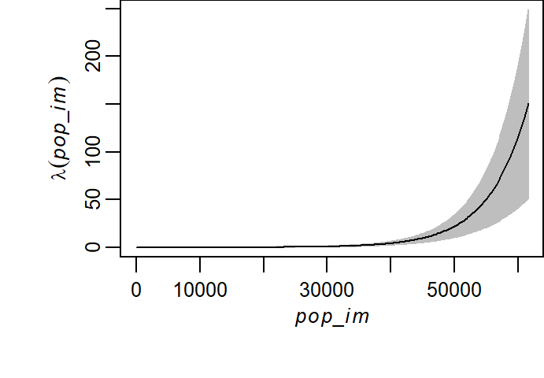
Fitting a Poisson point process model provides an estimate of how intensity varies with a covariate. However, the presence of a fitted relationship does not necessarily imply that the covariate meaningfully improves our understanding of the observed point pattern. In the next section, we compare the covariate-based model to a simpler null model (e.g., a homogeneous intensity model) using formal statistical tests. This allows us to assess whether the covariate explains a significant portion of the observed variation in point intensity.
14.5 Hypothesis Testing for Covariate Effects
A Poisson point process model can always be fitted to an observed point pattern, but the presence of a fitted relationship does not necessarily imply that the covariate meaningfully explains the observed distribution of points. To assess whether a covariate improves our understanding of the point pattern, we compare the fitted model to a simpler alternative.
In this framework, a model that assumes homogeneous intensity across space serves as the null hypothesis, while a model that allows intensity to vary as a function of a covariate serves as the alternative hypothesis.
For example, we may wish to determine whether the spatial distribution of Walmart stores is better explained by population density than by a model that assumes no spatial preference. In other words, we want to assess whether variation in store intensity can reasonably be attributed to population density rather than to random variation alone.
The following figure shows Walmart store locations relative to population density in Massachusetts.
To determine whether population density provides a meaningful explanation for the observed Walmart distribution, we fit both the null and alternative models and compare their fit using a likelihood ratio test. This test evaluates whether the additional complexity of the covariate-based model is justified by a significantly better fit to the observed point pattern.
A Poisson point process model fitted to the Walmart point pattern using the ppm function in the spatsat package (Baddeley et al. 2016) produces the following output for the null model:
Stationary Poisson process
Fitted to point pattern dataset 'P'
Intensity: 0.0021276
Estimate S.E. CI95.lo CI95.hi Ztest Zval
log(lambda) -6.152761 0.1507557 -6.448236 -5.857285 *** -40.8128Whereas the null model assumes a constant intensity across the study area, the alternative model allows intensity to vary with population density. Fitting this model produces the following output:
Nonstationary Poisson process
Fitted to point pattern dataset 'P'
Log intensity: ~pop
Fitted trend coefficients:
(Intercept) pop
-6.2551180493 0.0001043115
Estimate S.E. CI95.lo CI95.hi Ztest
(Intercept) -6.2551180493 1.611991e-01 -6.571062e+00 -5.9391736579 ***
pop 0.0001043115 3.851572e-05 2.882207e-05 0.0001798009 **
Zval
(Intercept) -38.803683
pop 2.708284
Problem:
Values of the covariate 'pop' were NA or undefined at 0.7% (4 out of 572) of
the quadrature pointsUsing the estimated coefficients from the fitted models, we can express the intensity functions explicitly.
The null model, which assumes homogeneous intensity across the study area, takes the form:
\[ \lambda(i) = e^{-6.2} \]
The alternative model, which allows intensity to vary as a function of population density, takes the form:
\[ \lambda(i) = e^{-6.3 + 1.04\times10^{-4}population} \]
To better understand how these models differ, we can visualize the estimated intensity (\(\widehat{\lambda}\)) as a function of population density for both the null and alternative models.
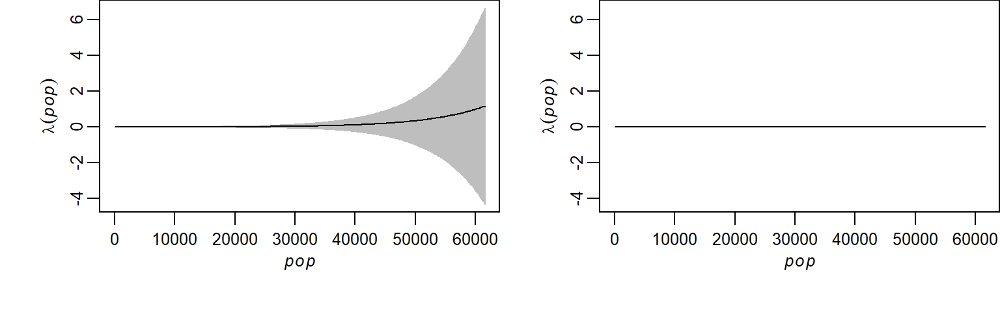
The fitted intensity functions clearly differ, but this does not necessarily imply that the population-density model provides a significantly better explanation of the observed point pattern than the null model. The relatively wide confidence intervals associated with the covariate-based model, especially at higher population densities, suggest uncertainty in the estimated relationship. This highlights the need for formal statistical testing before concluding that population density contributes meaningfully to the observed variation in store intensity.
To formally assess whether the covariate-based model provides a significantly better fit than the null model, we use a likelihood ratio test. This test compares the log-likelihoods of the two models and evaluates whether the improvement in fit achieved by the more complex model is greater than would be expected by chance alone.
Analysis of Deviance Table
Model 1: ~1 Poisson
Model 2: ~pop Poisson
Npar Df Deviance Pr(>Chi)
1 5
2 6 1 4.2531 0.03918 *
---
Signif. codes: 0 '***' 0.001 '**' 0.01 '*' 0.05 '.' 0.1 ' ' 1The value reported under PR(>Chi) is the p-value. It represents the probability of observing an improvement in fit at least as large as the one obtained here if the null model were true. In our example, the resulting p-value is 0.039. This indicates that, under the assumption of homogeneous intensity, there is approximately a 3.9% chance of observing a difference between the two models this large or larger simply due to random variation. Because this probability is small, the results provide evidence that population density improves our ability to explain the spatial distribution of Walmart stores.
In summary, the likelihood ratio test suggests that population density is a meaningful covariate for explaining variation in Walmart store intensity. While uncertainty remains in the estimated relationship, the covariate-based model provides a significantly better fit than the homogeneous-intensity model.
14.6 Summary
This chapter introduced methods for analyzing first-order effects in spatial point patterns. Rather than focusing on interactions among points, first-order analyses seek to understand how point intensity varies across space and how that variation may be related to underlying environmental or socioeconomic factors.
- Intensity refers to the underlying rate at which events occur across space, whereas density refers to the observed number of points per unit area.
- A homogeneous point process assumes constant intensity across the study area, while an inhomogeneous process allows intensity to vary spatially.
- Global density provides a single estimate of intensity for an entire study region and serves as a useful baseline summary measure.
- Local density methods allow intensity to be estimated at different locations, helping identify spatial variation that may indicate first-order effects.
- Quadrat density estimates local intensity by partitioning the study area into subregions, but results can be sensitive to quadrat size and placement, an example of the modifiable areal unit problem (MAUP).
- Kernel density estimation (KDE) replaces fixed quadrats with a moving window, producing a smoother representation of spatial intensity.
- Density and intensity surfaces can be compared to covariates such as elevation or population density to explore potential explanations for spatial variation in point intensity.
- Non-parametric intensity modeling estimates the relationship between intensity and a covariate without assuming a specific functional form.
- Poisson point process models (PPMs) provide a parametric framework for expressing intensity as a function of one or more covariates.
- PPMs focus on first-order effects, assuming that events occur independently and that intensity varies as a function of external factors rather than interactions among points.
- Likelihood ratio tests can be used to compare a covariate-based intensity model to a simpler homogeneous-intensity model, allowing us to assess whether a covariate significantly improves our understanding of the observed point pattern.
- Throughout this chapter, the emphasis has been on explaining where point intensity is high or low and why it varies across space. In the next chapter, we turn our attention to second-order effects, asking whether points exhibit clustering, dispersion, or interaction beyond what would be expected from the underlying intensity surface alone.